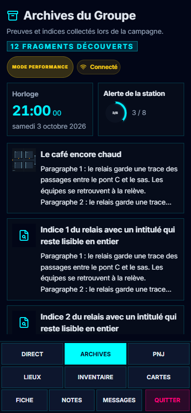

T4 · J2 intégré
Application réelle et campagne fictive de Varn. Consultation, échanges et feedback aux quatre formats. Les alertes génériques montrent leur état local ; les messages passent par le vrai serveur du banc.

Les entrées non partagées restent absentes des listes. Le feedback rejoint le meneur ; les échanges privés entre joueurs sont éprouvés avec deux tablettes.